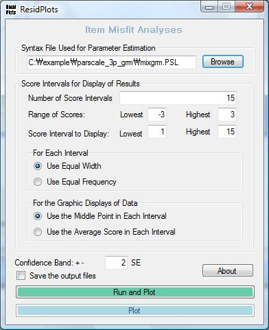
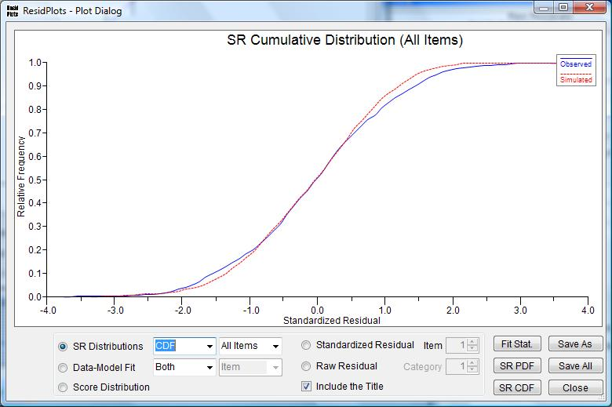
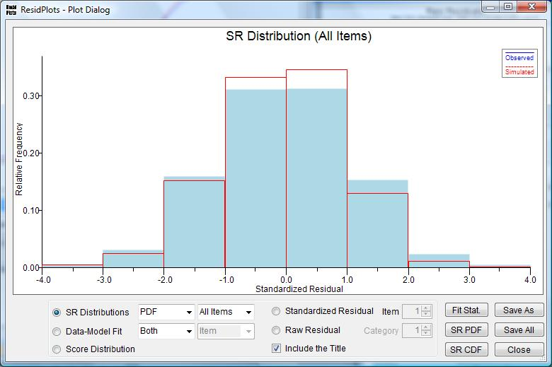
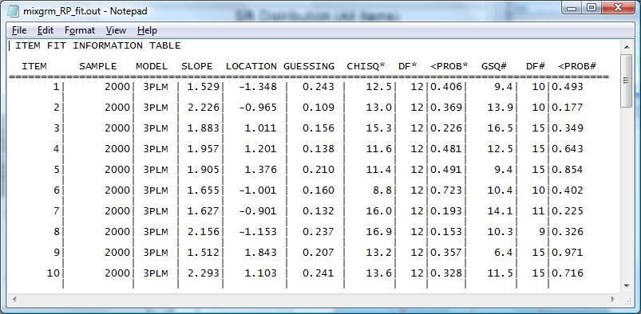

ResidPlots-2 v2.0
Computer Software for IRT Graphical Residual Analyses
Preferred Citation
Liang, T., Han, K. T., & Hambleton, R. K. (2008). ResidPlots-2: Computer software for IRT graphical residual analyses, Version 2.0 [Computer Software]. Amherst, MA: University of Massachusetts, Center for Educational Assessment.
User's Guide Citation
Liang, T., Han, K. T., & Hambleton, R. K. (2008). User's guide for ResidPlots-2: Computer software for IRT graphical residual analyses, Version 2.0 (Center for Educational Assessment Research Report No. 688). Amherst, MA: University of Massachusetts, Center for Educational Assessment.
About ResidPlots-2
The purpose of ResidPlots-2 is to provide a powerful tool for graphical residual analyses. The software includes several key features:
- Supports the most widely used IRT models including three dichotomous models (1PLM, 2PLM, 3PLM) and three polytomous models (GRM, GPCM, NRM).
- Provides considerable flexibility with respect to the number and size of intervals for which residuals are computed. Users can decide number of intervals, choose equal width or equal frequency, select the location of data plots in each interval, and eliminate intervals at the lower or higher end of the proficiency scale.
- Allows users to decide what type of error bars they wish to have displayed on raw residual plots, and to specify the number of standard errors represented by the error bars (e.g., 2 SE).
- Provides three sets of plots: item-level raw and standardized residual plots with error bars; test-level standardized residual distributions (PDF and CDF) with item fit and score fit plots from both empirical and simulated data; and observed vs. predictive test score distributions (PDF and CDF).
- Features a user-friendly interface — users merely point to the syntax file used to run PARSCALE, BILOG-MG, or MULTILOG and ResidPlots-2 will provide the analysis.
Screenshots

Main Menu

Plot Options

Output Example

Residual Analysis Output

Score Distribution Output
Downloads
Requires Microsoft Windows Vista or later with .NET Framework 3.5.
ResidPlots 2.0
October 26, 2008
Corresponding Author: Tie Liang (tliang@educ.umass.edu)